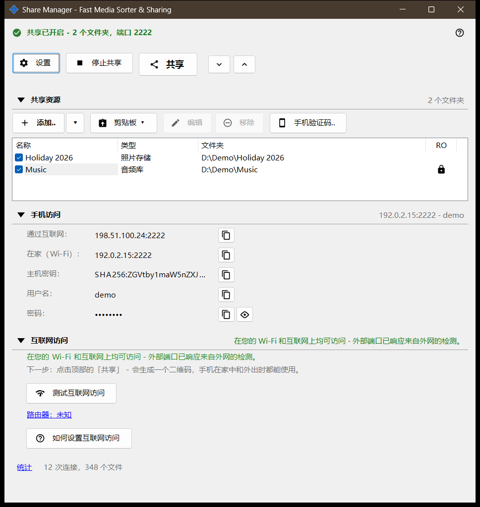
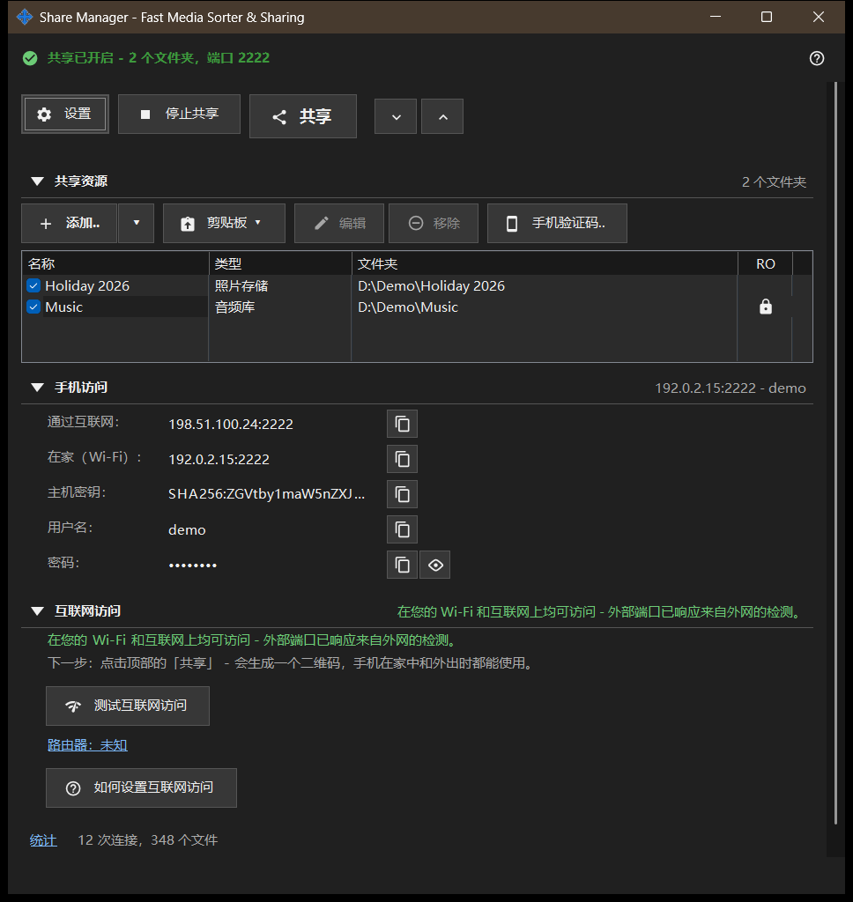

Share Manager - Fast Media Sorter & Sharing
用途说明
Share Manager 的主窗口，即本地共享与计划服务。它列出这台电脑通过 SFTP 与手机共享的文件夹，启动和停止共享，提供访问码，并显示手机如何才能连到这台电脑。计划操作和交换账户的页面在管理器设置中。它可从查看器或托盘图标打开；关闭窗口后应用仍留在托盘中。


操作顺序
- 点击「添加..」，选择「文件夹..」，把文件夹放入列表。
- 勾选该文件夹：勾选的文件夹才会被提供。
- 点击「开始共享」（至少需要勾选一个文件夹）。
- 点击「共享」，获取给手机用的二维码或 .fmscfg 文件。
- 若要从家庭网络之外访问，打开「互联网访问」组并使用其中两个按钮。
- 用完后点击「停止共享」。
界面元素
顶部一行
「设置」打开管理器设置。服务器运行时，「开始共享」会变成「停止共享」。「共享」打开访问码向导，只在共享开启时可用；否则提示会要求先启动服务器。「全部展开」和「全部折叠」用于展开或折叠下面的各个组。
共享的资源
每个资源一行，带有复选框，以及「名称」「类型」「文件夹」三列。勾选的行会提供给手机；列表为空时显示「添加第一个资源..」。取消勾选最后一个已勾选的文件夹时，窗口会询问是否停止共享，因为已连接的手机会被断开。在没有任何勾选的情况下开始共享，只会显示提示「请先添加文件夹并勾选它。」。
手机访问
手机或任何 SFTP 客户端所需的连接数据：互联网上和家中（Wi-Fi）的地址、IPv6、主机密钥、登录名和密码。「显示密码」会显示密码，「隐藏密码」再次将其遮住。该组下方的文字说明手机只能在家中还是也能从外部连到这台电脑。
互联网访问
「测试互联网访问」打开互联网访问测试窗口。「如何设置互联网访问」打开路由器指南。「路由器：..」链接打开路由器自己的页面；没有找到路由器时显示「路由器：未知」。该组带有一条警告：任何得知地址、登录名和密码的人都能访问每个共享文件夹，所以不要公开二维码或 .fmscfg 文件，用完后请关闭共享。
统计
在各组下方，「统计」链接旁边有一行简短的摘要，如「N 次连接，M 个文件」。该链接打开带有完整计数的共享状态窗口。
服务器功能关闭时
在服务器组件启用之前，窗口显示「服务器功能已关闭」和按钮「启用服务器功能..」，后者打开「启用文件夹共享」窗口。如果安装中缺少共享组件，窗口会说明这一点，并要求重新安装应用。